Greta Gerwig was deep in the American Wing of the Met, searching for signs of modern life. She wound her way instinctively through the halls, bobbed between throngs of tourists, waved an arm and leapt impulsively into a closing elevator: “Maybe we’ll go in here! Sorry. Hi!”
Finally she came to a Winslow Homer oil painting from 1870, in which three drenched girls were wringing out their heavy swimming costumes on a Massachusetts shore. One was obscured beneath a toss of wet blond hair. Another was planted in the sand, scratchy bare legs splayed out in front of her. Her bathing cap lent her an androgynous edge. She shot the blonde a feral glare.
As Gerwig set about writing and directing her adaptation of Louisa May Alcott’s “Little Women,” due Christmas Day, she hunted for evocative images of girls from the Civil War and just after — what she calls “girls-you-know pictures.” She studied portraits from the past that hit her with a curious immediacy: a new wife disdainfully preparing her first stew, painted by Lilly Martin Spencer in 1854; a surly Victorian teen captured in sepia by Julia Margaret Cameron. “This is a terrific one of this little munchkin,” Gerwig said, conjuring the Cameron photograph from the recesses of her phone. “Look at this girl. She’s so arrogant and mad. I love her.”
“Little Women” is a snow globe of girlhood that has been shaken and retold, generation after generation, for 150 years. Since 1917, it has been adapted for film seven times. The March sisters still act as an enduring personality test for young readers who see themselves in the mature Meg, the vain and ambitious Amy, the shy and sentimental Beth or, more often than not, the tomboyish Jo, who is the heroine of unruly, writerly girls — girls like Louisa May Alcott and Greta Gerwig.
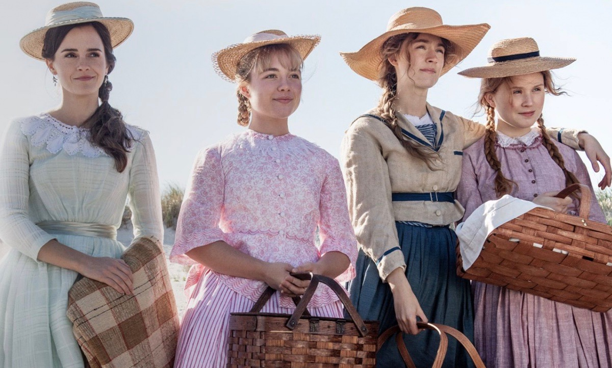The March sisters in Gerwig’s film: From left, Meg (Emma Watson), Amy (Florence Pugh), Jo (Saoirse Ronan) and Beth (Eliza Scanlen). (Wilson Webb/Columbia Pictures)
Yet as the book goes on, the modern girl’s identification with the sisters grows less comfortable: By the end, each of the Marches is either married or dead. These “four really talented weirdo girls who were ambitious and funny and competitive and kind of crazy,” as Gerwig describes them, seem trapped by history. They are posed unnaturally in the conventional narratives of their time.
Gerwig’s film is less an update than it is an excavation — a kind of literary investigation of the characters, and their writer, and what they all really wanted. The result is a meta tale that cracks open the world of “Little Women” to make a larger point about the stories we tell about women and girls. Reading the novel again as an adult, Gerwig, who is 36, was struck by how modern its dialogue felt once she brushed away the dusty surrounding material. “Things were jumping out at me that I felt like I’d never heard before,” Gerwig said, like Marmee telling her daughter Jo: “I am angry nearly every day of my life.” Gerwig said, “That’s not something you think of as Marmee saying, except that it’s right there in the book. She says it.”
Gerwig studied the story, and Alcott’s life, until she found what she calls “the thing underneath,” which is Alcott’s depiction of “all of these inappropriate emotions for young women to have.” Gerwig’s adaptation feels modern. But “I didn’t invent it,” she said. “It’s there.”
GERWIG DOES NOT RECALL reading “Little Women” for the first time. “I always knew who the Marches were,” she said. “It got absorbed into the fabric of who I was.” Just a few weeks ago, Gerwig’s mother reminded her that she had played Jo in a community theater production of “Little Women” when she was an 11-year-old girl growing up in Sacramento. Gerwig had forgotten, but the outline of a memory surfaced: Jo was supposed to flop dramatically onto the floor, and Gerwig recalled thinking, “I’m not really selling this.”
Opening the book again in her 30s, she told me, revealed a porthole to her younger self. She had idolized Jo as a child, and as she reread the story, she found herself measuring her adult life against the expectations of her girlhood. “I think, as adult women, we’re always walking with our younger selves,” she said. “I feel like I’m always answering to her, about whether I’m being as brave as I could be, or as big as I could be, or as ambitious as I could be.”
Her film is the rare adaptation that centers on the March sisters as adults. It opens when they are at the precipice of womanhood, halfway through the book. The project of their creative girlhood has stalled, and life has become about making a living, or marrying into one. Then it blinks back and forth, from childhood to adulthood, investigating where childhood dreams bloom and where they shrivel.
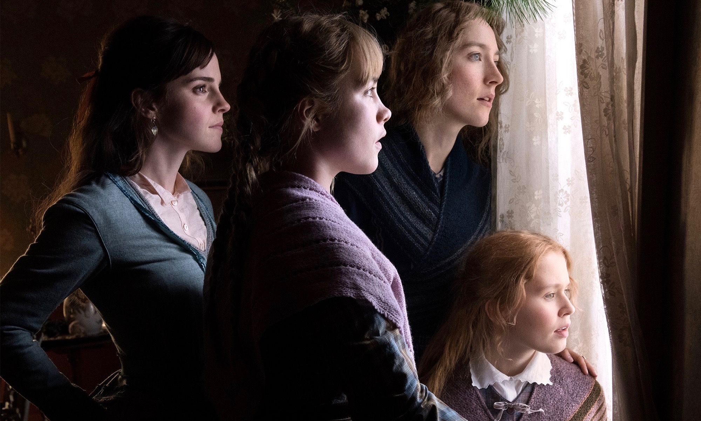The March sisters in Gerwig’s film: From left, Meg (Emma Watson), Amy (Florence Pugh), Jo (Saoirse Ronan) and Beth (Eliza Scanlen). (Wilson Webb/Columbia Pictures)
Even as Gerwig was ruminating on Jo March, she was becoming her: Both grew up to be writers of commercial, semi-autobiographical works. (Gerwig started in on the “Little Women” screenplay before she made the 2017 coming-of-age tale “Lady Bird,” about another girl from Sacramento; now she and her partner, the writer and director Noah Baumbach, 50, are at work on a script for a “Barbie” movie.) The producer Amy Pascal had been looking to mount a new “Little Women” 25 years after producing the beloved 1994 adaptation, and, Gerwig said, “I guess I went in and told her that I was the only person to make the movie, and that I thought it was about art and women and money.”
The film opens with Jo walking into the offices of the Weekly Volcano and offering a short story to its publisher, Mr. Dashwood. He scans it, laughs at its jokes, crosses out whole pages and underpays her. “I felt like it could have been written yesterday, sitting with an executive at a studio,” Gerwig said of the scene. Mr. Dashwood tells Jo to bring him more material, and to make sure that her characters are married by the end — “or dead, either way.”
As she dug into the world of “Little Women,” Gerwig learned how Alcott’s life diverged from that of Jo, her literary stand-in. Alcott never married. A story line that she lends to the girls’ father — he goes off to war to serve soldiers and falls ill — was ripped from her own experience as a nurse on the front. Gerwig was interested in what Alcott had wanted for Jo, and “what she put in the book because she felt she had to.” Alcott’s sharply witty letters and diaries were clarifying. “Money is the end & aim of my mercenary existence,” she once wrote to a friend, a line that Gerwig stole and gave to Jo.
The film’s Jo, played by the “Lady Bird” star, Saoirse Ronan — who is quickly becoming a kind of avatar and muse for Gerwig — borrows heavily from Alcott, down to her ambidexterity and her handwriting, which Gerwig hired calligraphers to reproduce. As the film goes on, the line between Jo and Alcott blurs; Ronan becomes both the character and the novelist who created her. To prepare for the role, Gerwig instructed Ronan to start writing, for herself.
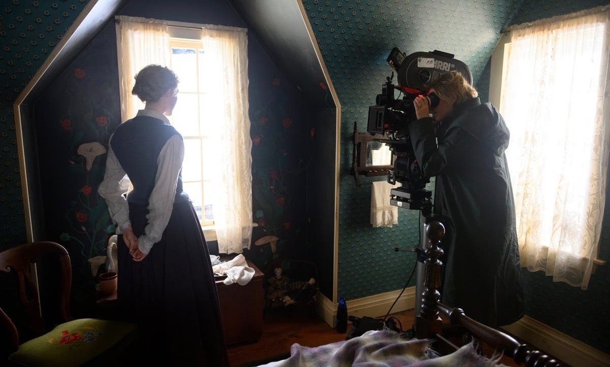Gerwig directing Ronan on the set. (Wilson Webb/Columbia Pictures)
Alcott had never been interested in writing a book for girls — she called the genre “moral pap for the young” — but her publisher insisted. When the novel became a sensation, selling out in two weeks, it pulled Alcott’s family out of abject poverty. And when Alcott’s readers demanded that Jo end up married — presumably, to the handsome boy-next-door, Laurie — Alcott complied, with a wry twist. In the back half of the book — originally published as a sequel, under the title “Good Wives” — Jo does get married, but not to Laurie. “Jo should have remained a literary spinster,” Alcott wrote to a friend, but she felt so pressured to satisfy expectations that “I didn’t dare refuse & out of perversity went & made a funny match for her,” with an older German professor. The only way Alcott could forge an independent life as a woman was to sell an alternate reality of her life — one in which Jo was not so independent.
Historical narratives have a tendency to lag behind history itself. In every time, there are the things you are allowed to do, and the things you are allowed to write. Three girls might bathe undisturbed on a beach, but when Winslow Homer painted them, viewers were disturbed. One critic called the girls “exceedingly red-legged and ungainly”; a family magazine drew trousers over their legs. Louisa May Alcott could be a spinster, but the same was not true for her heroine. It would be unsatisfying; it would be depressing; it wouldn’t sell.
As our tour of the Met wound down, Gerwig led us toward the cafe, where we pushed two chairs onto the end of a crowded table. She bent over a banana and spoke about the ending of her own “Little Women,” which rips open the contradictions between life and art and commerce and reveals them plainly onscreen. Jo goes to Mr. Dashwood with a book based on her life and the lives of her sisters. The publisher insists that the Jo character become a wife by the end. They haggle, and finally Jo agrees to marry her off, for a price.
And then we do see Jo snag herself a husband, in a way. Gerwig shot the scene like “the end of a studio romance,” she said. She wanted it backlit, with rain machines and the camera on a crane. She wanted Jo’s odd German suitor played by the French dreamboat Louis Garrel. She wanted a pursuit by carriage and a dramatic kiss.
The scene feels triumphant, but the real triumph is Jo’s novel, compromised though it may be. At some point, having filmed this meta romcom scene, Gerwig was asked to consider playing it straight. Couldn’t this be the real end of the movie, not just the fictional ending of the book-inside-the-movie? “To which I said, I never would have shot it that way,” Gerwig said. “Everyone would have been like, What did we just watch?” She added: “That ending’s not in me. At all.”
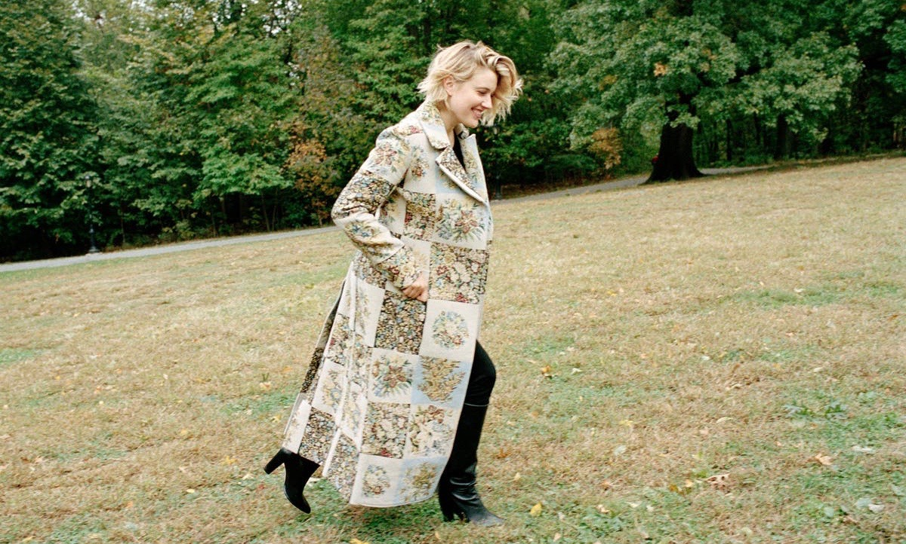The director in Central Park. She said rereading “Little Women” made her think of her hopes as a girl: “I think, as adult women, we’re always walking with our younger selves.” (Jody Rogac for The New York Times)
As our tour of the Met wound down, Gerwig led us toward the cafe, where we pushed two chairs onto the end of a crowded table. She bent over a banana and spoke about the ending of her own “Little Women,” which rips open the contradictions between life and art and commerce and reveals them plainly onscreen. Jo goes to Mr. Dashwood with a book based on her life and the lives of her sisters. The publisher insists that the Jo character become a wife by the end. They haggle, and finally Jo agrees to marry her off, for a price.
And then we do see Jo snag herself a husband, in a way. Gerwig shot the scene like “the end of a studio romance,” she said. She wanted it backlit, with rain machines and the camera on a crane. She wanted Jo’s odd German suitor played by the French dreamboat Louis Garrel. She wanted a pursuit by carriage and a dramatic kiss.
The scene feels triumphant, but the real triumph is Jo’s novel, compromised though it may be. At some point, having filmed this meta romcom scene, Gerwig was asked to consider playing it straight. Couldn’t this be the real end of the movie, not just the fictional ending of the book-inside-the-movie? “To which I said, I never would have shot it that way,” Gerwig said. “Everyone would have been like, What did we just watch?” She added: “That ending’s not in me. At all.”
 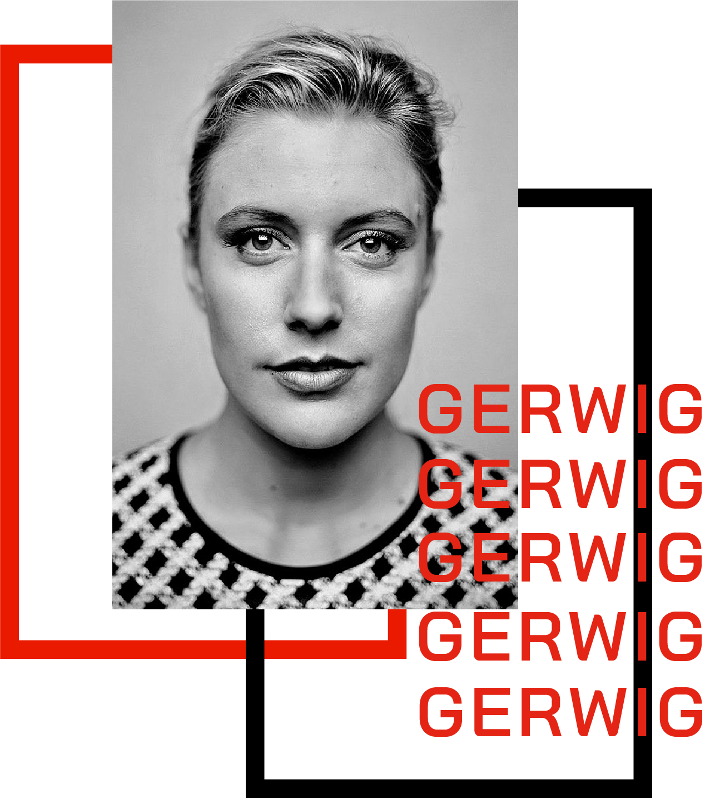
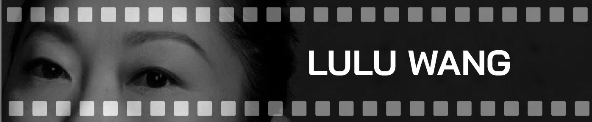
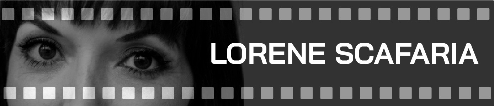
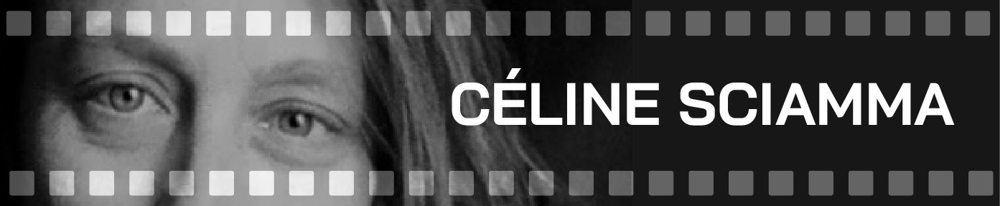
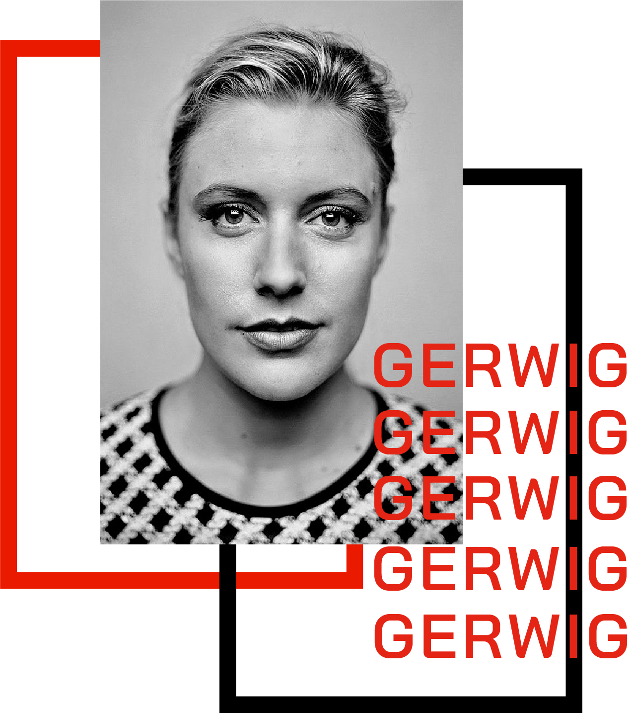
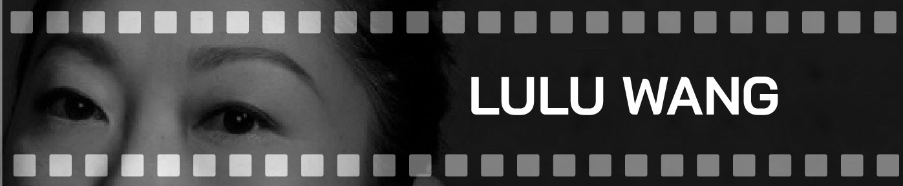
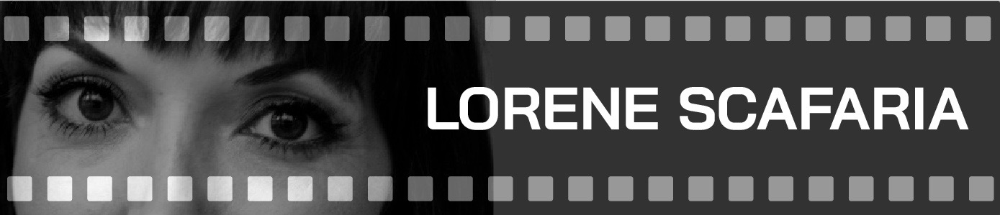
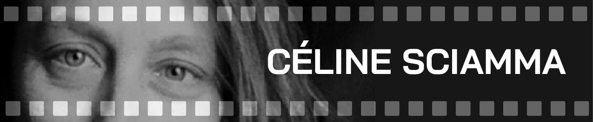